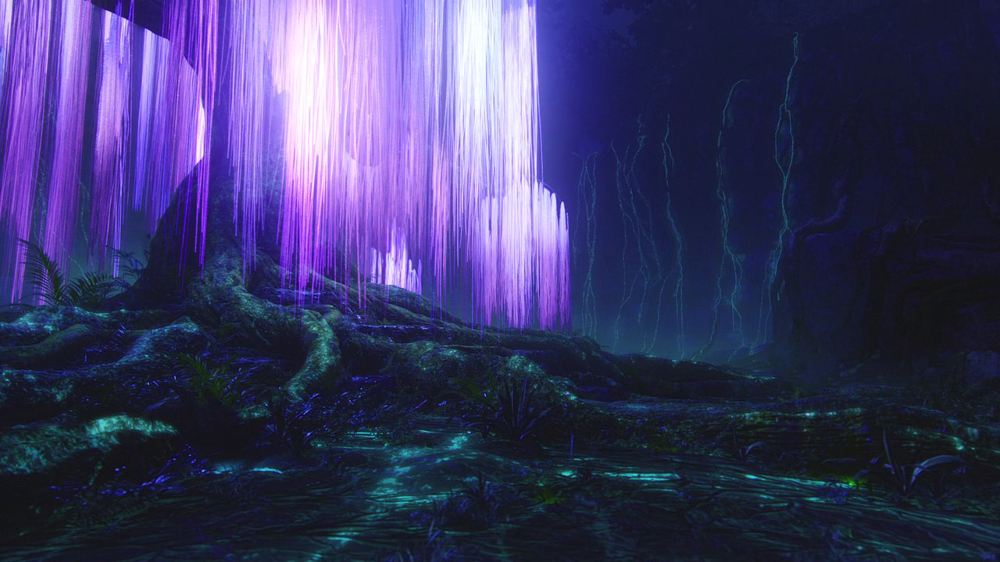

The Tree of Souls is a giant willow-like tree that is said to be the closest connection to Eywa on Pandora. As pointed out by Miles Quaritch, the tree is a point of extreme spiritual significance to the Na'vi, more so than any other point on Pandora. As of 2154, the site has been spiritually significant for at least 3,000 years.
Besides being a connection to Eywa, also works as a way for her to directly interact with the world through the seeds of the tree. The tree has the capability to connect directly to the human nervous system, despite humans lacking a queue. The roots of the Tree of Souls are capable of initiating a neural link with the Na'vi, like with the Tree of Voices. This allows all of the Na'vi to unite as one.
The tree has been threatened at least twice in the past. The destruction of the Tree of Souls would prove devastating to the Na'vi as a whole, and would create a cultural and religious void that would decimate the race entirely.

Atokirina
Like any tree, this one sends out seeds, and the Na’vi believe that each seed — called atokirina (or “woodsprite”) — contains a spirit in pure communion with Eywa. Atokirina can often be seen drifting, jellyfish-like, through the forest, and the Na’vi interpret their various behaviors — how they drift, where they settle, and whether they cluster or remain solitary — as omens.